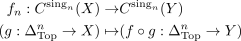
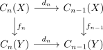
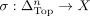
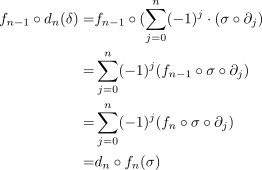

continuous function induces chain map
1. Proposition
Let  be topological spaces and
be topological spaces and  a continuous map.
Then the map induced by
a continuous map.
Then the map induced by

on the abelian group of singular n-simplices is a chain morphism for

2. Proof
element chasing for an simplex

results in:
∑j=0n (-1)j ⋅ (f ˆ σn(j)) ∈ Cn-1(X)